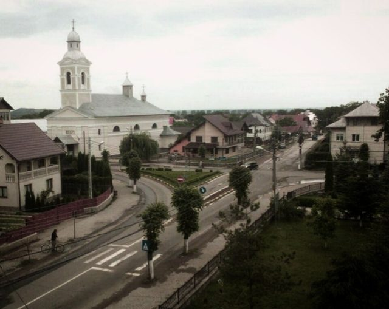

Home / Living Traditions / Northern and Eastern Europe
Playable heritage gameMarginea black pottery
Marginea in northern Romania is known for black pottery: jars thrown from local clay, burnished with a smooth stone and smoked in a closed kiln until they turn black. Here you throw a jar, then mark its bands in burnished and matte black with a little ochre.

How to play
- Look at the small jar in the frame: that is the shape to make.
- Drag across the spinning clay, row by row, to set the width of the jar; the lit outline shows the target.
- Pick a finish from the swatches and tap a band: burnished strokes, incised lines or an ochre slip, as on the target.
- Press Check to see your stars.
Rules at a glance
- The jar has twelve rows; each row can be set from narrow to wide.
- Shape counts for most of the score, the finish of the bands for the rest.
- Each band must carry the finish shown on the target.
- Undo takes back your last change; Reshape returns to the clay.
- Three stars for a close shape with every band in the right finish.
About the tradition
At Marginea in Bukovina, northern Romania, potters have long fired their ware in a kiln that is closed off so the smoke blackens the clay. Before firing the surface is burnished with a smooth pebble, and many pots carry incised wave and zigzag lines. The craft is still practised in the village.
Origins
A living tradition passed from person to person; it is not tied to a single dated origin. It belongs to the cultural world of Northern and Eastern Europe.
Credits
- Photo: Cozma1995, CC BY-SA 4.0, source on Wikimedia Commons
- Text: CC BY-SA 4.0, World Heritage Games.
Sources

Get the app
Marginea black pottery is one of 7 tile and pottery crafts in the Tiles & Pottery of the World app for Android. Submitted to Google Play; in review. Store links appear here the day it goes live. One app, many traditions, no account needed.
More games to play


Welsh Love Spoon Carving
United Kingdom · Crafts and makingPlay preview · in the Woodcraft & Metal of the World app
Tessellated Mosaic Making
Italy +1 · Crafts and makingPlay preview · in the Craft Designs of the World app
Blacksmith's Forge
United Kingdom +4 · Crafts and makingPlay preview · in the Woodcraft & Metal of the World app

More from Romania

Horezu ceramics
Romania · Crafts and making

Oina
Romania · Bat-and-ball games
Trânta
Moldova +1 · Wrestling and martial sports